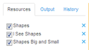

View the Output for a Resource (or Set of Resources)
You may view the output for a resource (or set of resources) to verify that the information was captured and/or updated correctly.
Select the resources

On the Resources tab, select the resouces for which to view output.
View the output
Click the Output tab. The work you have done to tag each resource selected displays beneath the Output tab.